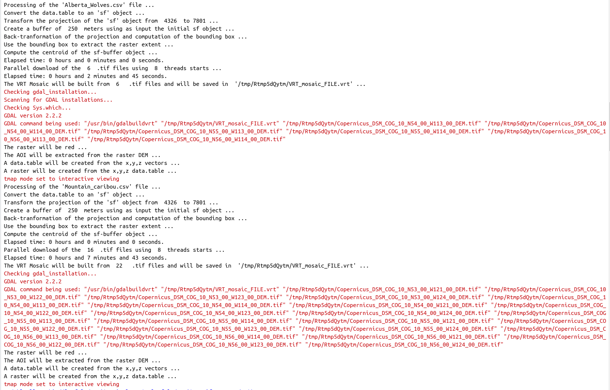
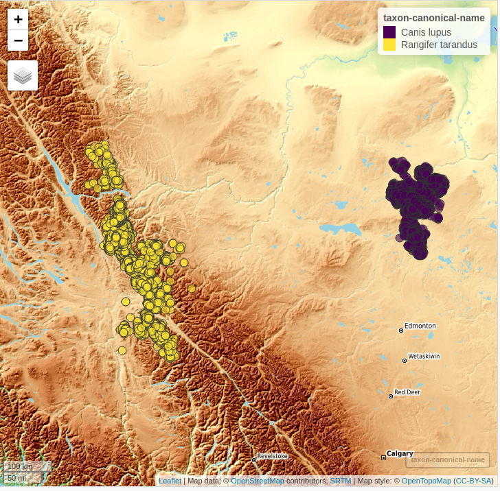
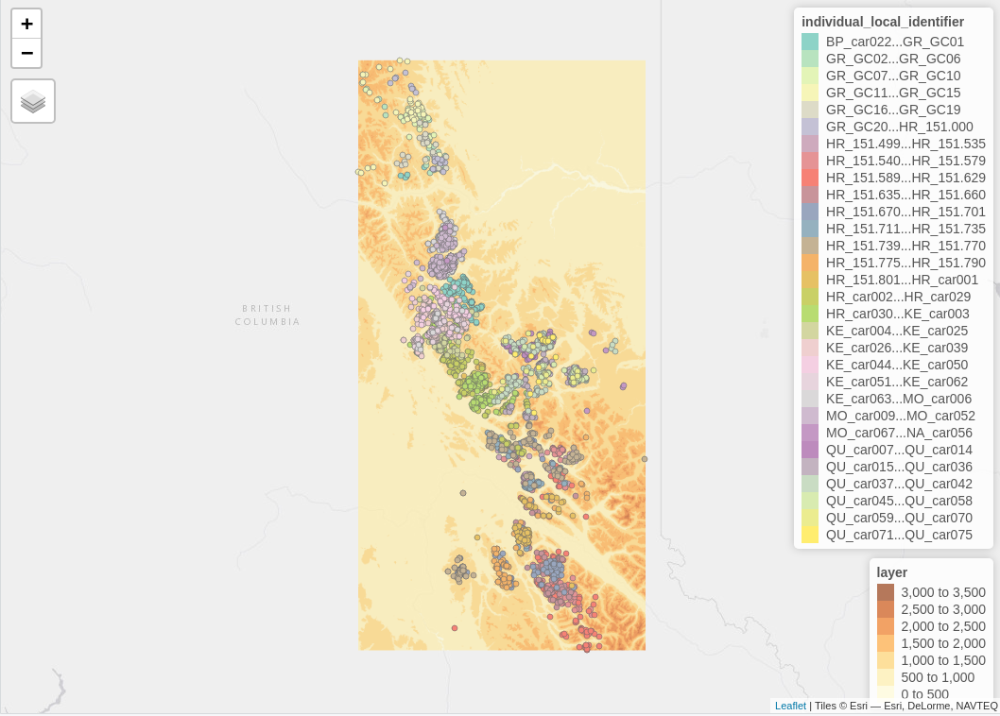
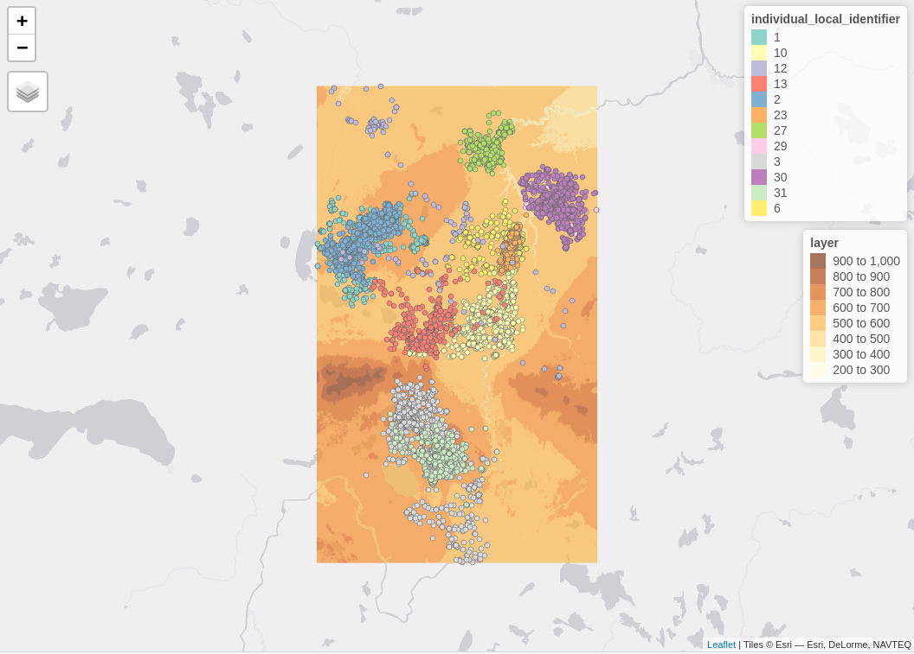

vignettes/Copernicus_Digital_Elevation_Models.Rmd
Copernicus_Digital_Elevation_Models.RmdIn this vignette I’ll explain how to use the CopernicusDEM R package based on a use case of the Movebank animal tracking data. I picked animal tracking data because there is an abundance in the Movebank archive from all over the world. In this specific vignette I’ll use data of Wolves from the northeastern Alberta and Caribou from the British Columbia (see the reference papers at the end of the vignette for more information).
The following wrapped code snippet creates the maps of this vignette, and it does the following:
# We disable s2
sf::sf_use_s2(use_s2 = FALSE)
# We load the .csv files
files = c(system.file('vignette_data/Alberta_Wolves.csv', package = "CopernicusDEM"),
system.file('vignette_data/Mountain_caribou.csv', package = "CopernicusDEM"))
taxon_data = mapv_data = list()
for (FILE in files) {
cat(glue::glue("Processing of the '{basename(FILE)}' file ..."), '\n')
dtbl = data.table::fread(FILE, header = TRUE, stringsAsFactors = FALSE)
cols = c('location-long', 'location-lat', 'timestamp', 'individual-local-identifier',
'individual-taxon-canonical-name')
dtbl_subs = dtbl[, ..cols]
colnames(dtbl_subs) = c('longitude', 'latitude', 'timestamp', 'individual_local_identifier',
'individual-taxon-canonical-name')
taxon_data[[unique(dtbl_subs$`individual-taxon-canonical-name`)]] = dtbl_subs
dtbl_subs_sf = sf::st_as_sf(dtbl_subs, coords = c("longitude", "latitude"), crs = 4326)
sf_rst_ext = fitbitViz::extend_AOI_buffer(dat_gps_tcx = dtbl_subs_sf,
buffer_in_meters = 250,
CRS = 4326,
verbose = TRUE)
#................................................................
# Download the Copernicus DEM 30m elevation data because it has
# a better resolution, it takes a bit longer to download because
# the .tif file size is bigger
#...............................................................
dem_dir = tempdir()
print(dem_dir)
sfc_obj = sf_rst_ext$sfc_obj |>
sf::st_make_valid()
dem30 = CopernicusDEM::aoi_geom_save_tif_matches(sf_or_file = sfc_obj,
dir_save_tifs = dem_dir,
resolution = 30,
crs_value = 4326,
threads = parallel::detectCores(),
verbose = TRUE)
TIF = list.files(dem_dir, pattern = '.tif', full.names = TRUE)
if (length(TIF) > 1) {
#....................................................
# create a .VRT file if I have more than 1 .tif files
#....................................................
file_out = file.path(dem_dir, 'VRT_mosaic_FILE.vrt')
vrt_dem30 = CopernicusDEM::create_VRT_from_dir(dir_tifs = dem_dir,
output_path_VRT = file_out,
verbose = TRUE)
}
if (length(TIF) == 1) {
#..................................................
# if I have a single .tif file keep the first index
#..................................................
file_out = TIF[1]
}
# Crop the DEM raster
raysh_rst = fitbitViz::crop_DEM(tif_or_vrt_dem_file = file_out,
sf_buffer_obj = sfc_obj,
verbose = TRUE)
# Downsample the raster to make the visualization feasible
raysh_rst_downsample = terra::aggregate(x = raysh_rst,
fact = 5,
fun = mean,
cores = parallel::detectCores())
# create the Elevation OpenTopoMap
mp_elev = mapview::mapview(x = raysh_rst_downsample,
col.regions = grDevices::terrain.colors(10),
layer.name = 'Elevation',
map.types = 'OpenTopoMap',
legend = TRUE)
# get the unique colors of the identifier
unq_color_ids = length(unique(dtbl_subs_sf$individual_local_identifier))
print(unq_color_ids)
set.seed(seed = 3)
colors_ids = sample(x = colors(distinct = TRUE),
size = unq_color_ids,
replace = FALSE)
# convert the identifier to a factor
dtbl_subs_sf$individual_local_identifier = as.factor(dtbl_subs_sf$individual_local_identifier)
# visualize the identifier
mp_ids = mapview::mapview(dtbl_subs_sf,
zcol = 'individual_local_identifier',
layer.name = 'identifier',
col.regions = grDevices::colorRampPalette(colors = colors_ids, space = "Lab"),
legend = ifelse(unq_color_ids > 10, FALSE, TRUE))
# combine both mapview objects
mp_both = mp_elev + mp_ids
mapv_data[[unique(dtbl_subs$`individual-taxon-canonical-name`)]] = mp_both
}
Now, based on the saved data.tables we can create first the map (using the mapview R package) to view the data of both animals in the same map,
#.............................................
# create the 'mapview' object of both datasets
#.............................................
dtbl_all = rbind(taxon_data$`Canis lupus`, taxon_data$`Rangifer tarandus`)
# see the number of observations for each animal
table(dtbl_all$`individual-taxon-canonical-name`)
# create an 'sf' object of both data.tables
dat_gps_tcx = sf::st_as_sf(dtbl_all, coords = c("longitude", "latitude"), crs = 4326)
lft = mapview::mapview(x = dat_gps_tcx,
zcol = 'individual-taxon-canonical-name',
map.types = 'OpenTopoMap',
layer.name = 'taxon-canonical-name',
legend = TRUE)
lft
The tracking data of the Caribou are on a higher elevation compared to the data of the Wolves. This is verified by the next map which includes the Elevation legend (layer). The additional legend shows the individual identifier of the animal - for the Tarandus there are 138 unique id’s whereas
mapv_data$`Rangifer tarandus` # caribou
mapv_data$`Canis lupus` # wolvesfor the Wolves only 12,

Elevation data using the CopernicusDEM R package can be visualized also in 3-dimensional space. For the corresponding use case have a look to the Vignette of the fitbitViz package which uses internally the Rayshader package.
Movebank References: